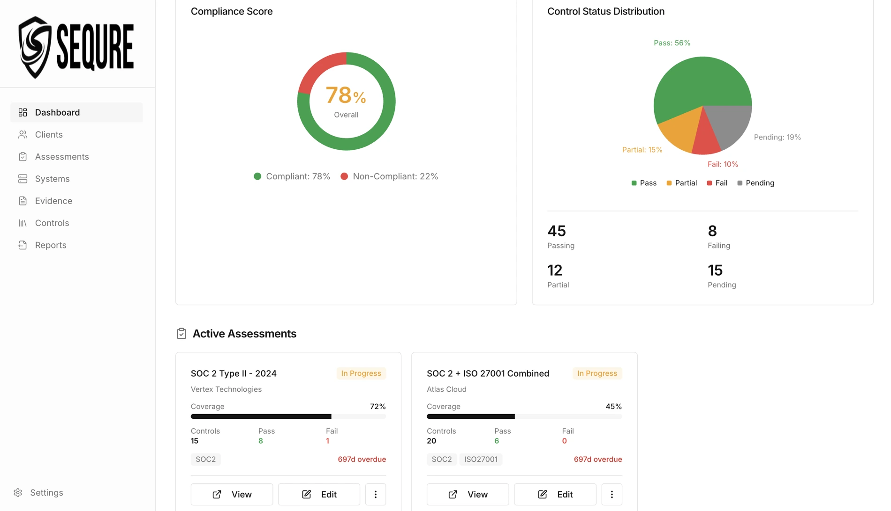

Audit Software · Independent Project
SEQURE
How does an auditor get from a folder of evidence to a recommendation a client can act on?
My father conducts internal audit reviews for firms. I built SEQURE to help him spend less time matching documents to requirements and give him a second perspective when drafting recommendations. I designed the assessment workflow and built its SQL database in Supabase.

From Client Profile to Audit Finding
Define the scope. A client creates a profile, lists the business systems under review, and selects the requirements for the assessment, such as SOC 2, ISO 27001, or HIPAA.
Connect evidence to controls. The client adds supporting material, such as an access review report or a configuration export. SEQURE maps the selected requirements to the relevant systems so the reviewer can see what each document supports.
Review the gaps. The AI flags potential issues and suggests follow-up actions. The auditor weighs each suggestion against the evidence and decides what to recommend. For example, a policy can explain who should approve access, while a dated review record can show whether someone actually checked it.
Building the SQL backend made the relationships concrete for me. A single client can have several systems and assessments. The key question for a reviewer is narrower: which evidence supports this control for this system? That question guided how I organized the information in the app.
What I Learned
I learned how IT general controls (ITGCs), such as access management and change approval, show up in everyday business records. Designing for multiple frameworks taught me to read each requirement closely: the same document can be relevant to two assessments and still leave different questions unanswered.
I eventually discontinued SEQURE. What stayed with me was a better understanding of both sides of an audit: an internal team needs a practical next step, and an external reviewer needs to understand how the evidence supports the conclusion. That now shapes how I explain cybersecurity findings to a business audience.
Back to Technical Projects